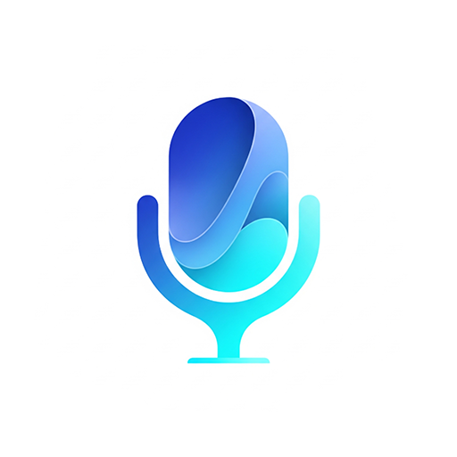

AEC01
声学回声消除
外放通话，
少一点回声。
边播放、边说话时，减少扬声器声音被麦克风再次收录，让免提交流更自然。
看看声音的变化
EasyMic APM 选购EASYMIC AUDIO PROCESSING MODULE
减少回声。减轻噪声。稳定音量。
为应用里的每一次开口，做好声音的前端。
ACOUSTIC FRONT END
声音前端由软件算法提供，普通麦克风也能接入 AEC、ANS 与 AGC。
THREE CAPABILITIES. ONE BETTER EXPERIENCE.
外放有回声，房间有杂音，
说话有远近。让声音的前端帮你处理。
A LITTLE CHANGE. A BETTER CONVERSATION.
轻触开关，探索三种声学能力。
让回声、噪声与音量变化，一目了然。
为声音，做三个小改变。
减少应用播放声音被再次采集。适合扬声器外放、免提通话等边听边说的场景。
功能动画，仅作体验说明。实际效果取决于设备、环境与配置。
BUILT FOR THE WAY YOU USE SOUND.
为沟通、互动和采集，
提供同一套声音前端能力。
视频会议、语音聊天或远程协作。减少外放回声和环境噪声，让每一次对话更容易听清。
MADE FOR UNITY.
从麦克风采集到前端处理。
让声音能力成为项目的一部分。
在现有采集流程中，选择你需要的声学能力。
Unity Package 将 APM 原生处理接入 EasyMic。完成授权后，即可在采集流程中启用所需能力。
在 Unity 项目中加入采集与声学处理扩展。
按产品需要开启 AEC、ANS 与 AGC。
结合设备与播放路由，验证实际声音体验。
需要消除回声的应用播放，应通过 EasyMic 播放链路提供完整参考。各项能力需相应授权。
MORE TO EXPLORE. 实验性扩展
阵列麦克风的空间信息，让应用可以选择固定方向，或跟随当前声源的声学轨迹。
需要独立、同步的多麦输入、实测阵列几何与 Directional 授权。实际方向抑制需按设备验证；短双麦阵列与复杂房间仍有明显限制。
THE RIGHT LICENSE. FOR YOUR NEXT IDEA.
两种 Unity 授权方式。
按你的部署与发布方式选择。
展陈 · 博物馆 · 数字多媒体 To B 项目
绑定 Unity 应用最终运行的目标部署机器。适合数字人一体机、展陈终端与现场单机项目，授权成本更轻。
绑定位置：目标运行机器
个人开发者 · To C 工作室 · 游戏与 AI 应用
绑定开发机。由这台开发机构建出的任何应用程序，都可使用 EasyMic APM 的前端声学能力，适合面向用户分发。
绑定位置：开发机
以上为 Unity 插件授权价格。阵列定向拾音属于实验性扩展，需相应权限与阵列硬件。原生库或源代码授权，请直接联系作者。
LET’S BUILD SOMETHING THAT SOUNDS BETTER.
购买咨询、SDK 或源码授权，联系作者。
A FEW THINGS YOU MIGHT WANT TO KNOW.
基础 AEC、ANS、AGC 由软件算法提供，普通麦克风也能接入，不需要为这三项能力专门使用复杂阵列。合适的麦克风与音频配置仍然重要；同步阵列可进一步探索空间能力，实际效果应按设备验证。
单机版绑定目标部署机器，也就是 Unity 打包后的程序最终运行的那台设备。只有绑定的目标机器可以使用被授权的 APM 声学功能，适合固定展陈终端与现场项目。
专业版绑定开发机。由该开发机构建出的应用可以在用户设备上使用被授权的前端声学能力，不按每台用户设备绑定。适合个人开发者、To C 工作室、桌面 AI 和面向 Steam 等渠道发布的游戏项目。
可以联系作者单独沟通原生 SDK、源代码及项目授权。微信：{{wechat}}。这类授权单独报价，不包含在网页所列 Unity 插件价格中。
AEC 需要与实际扬声器输出相匹配的播放参考。Unity 集成时，要消除回声的应用播放应通过 EasyMic 播放链路。声学效果还受到音频路由、设备与房间环境影响。
EasyMic APM · 前端声学处理库与 Unity Package
选择适合你的授权